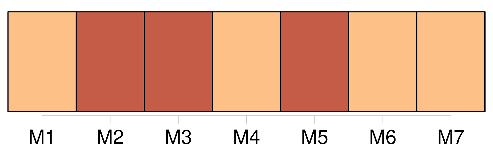
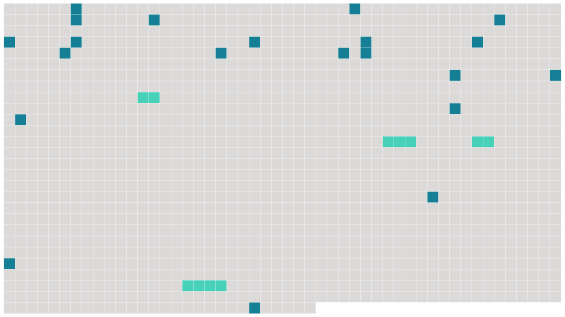

Longueur nb maillons : 25 mentions |
  |
Pas de voyages en Europe : [nous] en étions venus à regarder cette mince bande de territoires, ce surjeon de l'Asie comme un bloc, comme la masse de [notre] pays natal. On parlait d'elle comme d'un être unique, voué aux malheurs d'un unique destin : il y avait [notre] patrie, l'Europe, et [nous] [1 phrases] Ailleurs reposaient les autres continent, chargés des forces, des vertus, des sagesses absentes de [notre] province. [1 phrases] Et en effet l'ombre des cartels allemands, des milices fascistes, des textiles anglais, des bourreaux roumains, des socialistes polonais était aussi noire et froide que celle du comité des Forges et des usines de Saint-Gobain : mais [nous] n'en savions rien. [Nous] pensions vie intérieure quand il fallait penser dividendes, impérialisme, plus-value. Saisissez que [nous] étions en proie au vague des passions, que [nous] étions emportés dans un tourbillon d'apparences sentimentales. [Notre] éducation avait été assez mal faite, assez artificiellement conçue pour que [nous] pensions sans rire à la Justice, au Bien, au Mal : [nous] vivions dans le ciel, après tout.
Mais toutes [nos] forces [nous] tiraient du côté de la terre. [5 phrases] [Notre] conclusion était vide, parce que l'on [nous] avait accoutumés à penser à l'Orient comme au contraire de l'Occident : alors au moment que la chute et la pourriture de l'Europe étaient des faits absolument simples et clairs et distincts, la renaissance et la floraison de l'Orient n'appartenaient pas moins à l'ordre des évidences. Il renfermait le salut et la nouvelle vie [des européens] , il avait des remèdes et de l'amour de reste. [1 phrases] L'esprit de la civilisation planait sur l'Inde, la Chine [nous] semblait plus merveilleuse qu'à Marco Polo. Qui donc [nous] aurait révélé de bonnes raisons brutales, de bonnes raisons humaines, de nous intéresser à l'Asie : les grèves à Bombay, les révolutions et les massacres en Chine, les emprisonnements au Tonkin. [4 phrases]
Tout cela marquait simplement la paresse et l'impuissance des [gens d'Europe] à faire quelque chose pour [eux -mêmes] ; et les autres continents fournissaient quelques-uns des mondes imaginaires que tous les hommes inventaient dans la nuit pour oublier les vérités de leur purgatoire et décorer d'illusions, leur indigence et leur écrasement. [8 phrases] [Nous] possédons une tradition rarement interrompue de l'espace géographique, favorisée par les expéditions maritimes et que le développement républicain de l'instruction gratuite et obligatoire a contribué à rendre populaire. [7 phrases] [Nous] en sommes toujours là : des garçons de quatorze ans étouffés par la vertu de la famille, dégoûtés des têtières au crochet sur les fauteuils, des ronds de sparterie sous les semelles, fracturent les tiroirs ordonnés de leurs parents. [3 phrases] Seulement la terre connue, arpentée, cadastrée, [les gens d'Europe] l'ont mise en coupe : on est partout volé comme dans un bois ; les paradis sont des entreprises commerciales de cobalt, d'arachides, de caoutchouc, de coprah ; les sauvages vertueux sont des clients et des esclaves. [2 phrases] Ainsi sont réduits au silence ceux -là mêmes de qui [nos] pères attendaient des secrets. |
 |
La ressource peut être téléchargée sur la page Ortolang
Si vous avez des questions ou vous voyez des erreurs, merci d'envoyer un mail à silvia.federzoni89@gmail.com
Site développé par S. Federzoni (contact)